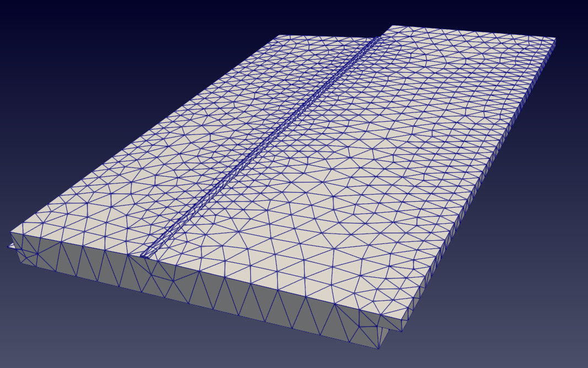
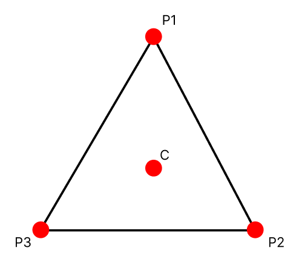
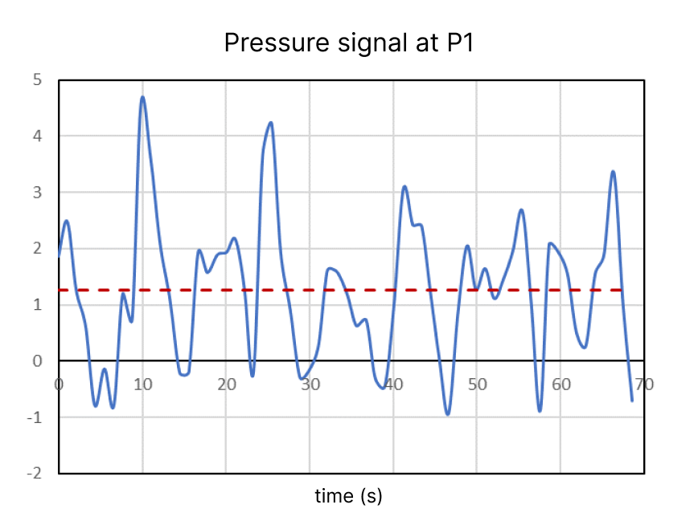
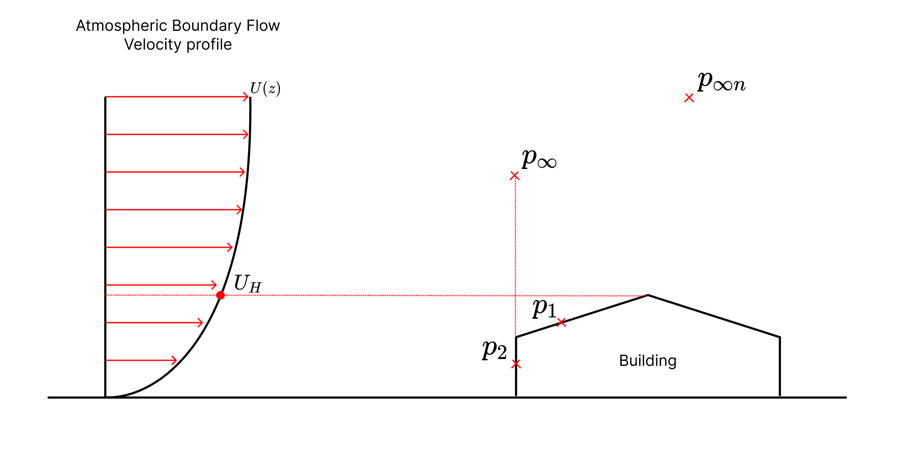
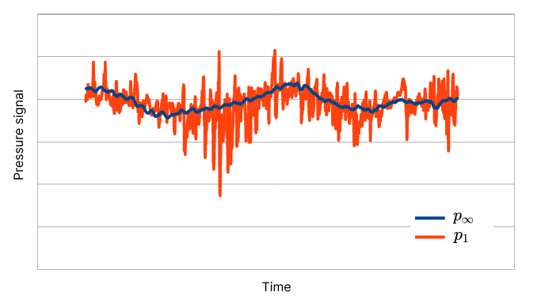
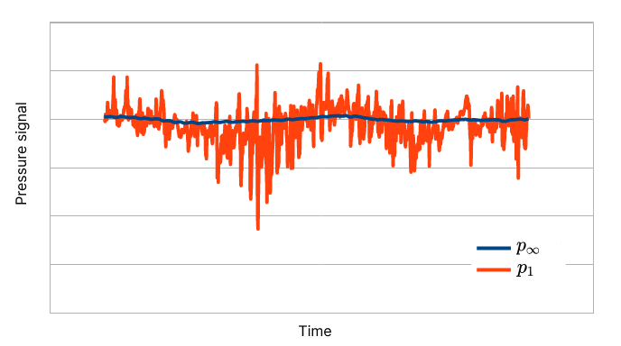

Pressure#
Pressure is a fundamental physical property that describes the force exerted on a surface per unit area. It is a measure of the intensity of force applied to a given area and is commonly expressed in units such as Pascals (Pa), atmospheres (atm), among others.
Wind tunnels and CFD simulations aim to measure the wind pressure over a body. The pressure data is relevant to engineers to quantify the wind induced stress over the structure of interest.
Otherwise, it would be very difficult to predict the pressure distribution given the complexity of the problem.
Module#
The Pressure module handles the analysis and post processing of pressure time series data over a body. Data comes from CFD transient simulations, and by definition is attached to a mesh.
Mesh describes a body geometry, and contains a set of discrete vertices and a set of triangles, which is defined by a sequence of 3 vertices. An illustration of a mesh and a mesh triangle is presented below:
{kind=link}

{kind=link}

The pressure data is a signal extracted at the center of each of the mesh’s triangles (C), with frequency defined by the simulation setup. The resulting data has the form of a time series signal for each extracted point, such as the example below.
{kind=link}

To process these signals, statistical operations, such as maximum, minimum, RMS or average, are applied as required by the use case.
Reference pressure#
To correctly assess the pressure effects over a structure, the operations needs to consider the static reference pressure. For example, consider a wind from a Atmospheric Boundary Flow coming onto a building, as suggests the image below:
{kind=link}

In order to assess the effects of pressure in \(p_1\) and \(p_2\), data of a probe far away from the building must be obtained. This data is a time series of the static reference pressure, which is used as \(p_{\infty}\). Multiple probes can be set to assess the static reference pressure.
Note
Normally, the static reference pressure probe is positioned at the frontside of the building, far above to avoid flow perturbations.
If the fluctuation of the static reference pressure signal is not relevant, it can be considered constant. Thus, only the time averaged static reference pressure (density) is used. Pressure signals examples are presented below:
{kind=link}

Pressure signal where static reference pressure should be considered#
{kind=link}

Pressure signal where static reference pressure can be neglected#
Units conversion#
A common process for a pressure analysis is to convert the LBM density to pressure and then this pressure to a dimensionless value. This facilitates the conversion between units (LBM and international system).
Important
It is essential to use the same unit system for all variables. For example, the value for the speed of sound in LBM units is \(c_s^2=\frac{1}{3}\), while in SI is 340 m/s.
The pressure signals obtained with Nassu solver are exported using LBM density units such as \(\rho\). To transform it to pressure the equation below can be used.
The speed of sound (\(c_s\)) is defined as \(c_s^2=\frac{1}{3}\) for our LBM modeling. To transform this pressure to an dimensionless form, it needs to be divided by a dynamic pressure \(q\):
Where \(U_H\) is the flow velocity at the building’s height, and \(\bar{\rho}_{\infty}\) is the averaged static reference pressure.
When the fluctuation of the static reference pressure signal is not relevant, the conversion can be simplified to: